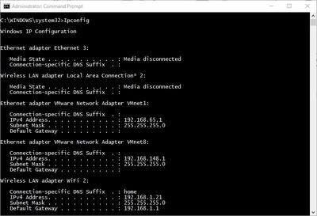
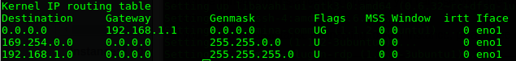
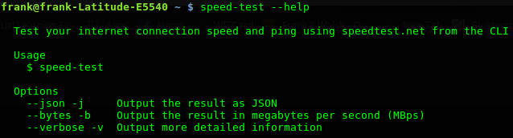
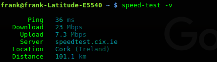
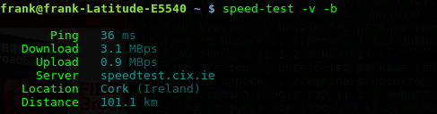
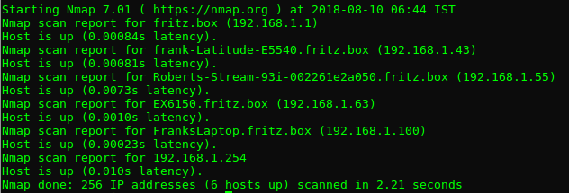

Home Network Investigation
Local Network · Network Speed · Connected Devices
Objectives
- Investigate network configuration on your machine
- Check download/upload speeds
- Use Network commands to scan your home network
Prerequesites
- Computer running WIndows/Linux/OSx
- Internet connection
Network Setup
Introduction
You will now investigate your home network setup. Not only is it a good idea to know how you connect to the local network in your home, but also what internet service provider you use, what's the maximum upload and download speed you can achieve, what IP address you have on the internet and what network interfaces you have on your machine. It may be useful to know these details if you need to troubleshoot connectivity and network issues in later labs.
Your Home Network
You are likely to be using one of the following systems to connect to the internet:
- DSL/Fiber wired connection with a home router using an Internet Service Provider (e.g. Eir)
- Mobile Broadband router (sometimes known as a 'hotspot') provided by a mobile network provider (e.g. 3).
- 3rd party wireless provider or general apartment complex broadband connection.
Most solutions will require that you have some form of physical device that can route network traffic from your home network and the internet (usually called Router). You can then connect your devices to the router and you're up and running! Every device that you connect must have a suitable network interface.
Your IP address
In the on-site day you used the ifconfig command to check out the network interfaces on a virtual machine. Now lets do the same on your actual workstation/laptop.
Open a terminal window and, at the command prompt, enter the following command for your Operating System:
- Windows:
ipconfig - Linux:
ifconfig - OS X:
ifconfig
You should see a summary of the network interfaces on your machine:

Your network set up will look different depending on various factors such as how you connect (wired, wifi) and how many network interfaces you have on your machine. More than likely, you should have at least 2 at the moment (assuming you completed the on-site lab); Ethernet(wired) and/or Wireless LAN (wifi).
So how do you know which interface you're currently using to connect to the internet? Generally, your Operationg System will select the interface with the highest speed. If you're 'wired' (usually 100mbit per second or 1000mbit per second) then that's the interface that will be used, otherwise it will fall back to wireless. To know for sure, you can have a look at the routing table on your machine. The routing table shows what interfaces network traffic will be sent out on.
On Windows,Linux and OS X, use the netstat –nr command to see a summary of the routing information. You will see one entry indicated as default(or with a destination of 0.0.0.0). That's the interface used to connect to the internet.

Exercise
Using the above commands, answer the following questions:
- What interface are you using?
- What is the IP address of the current interface?
- What is the physical address (MAC address) of the current interface?
- How many interfaces are listed on your machine.
- If not already, start up the vagrant box from the on-site day and run the ifconfig/ipconfig on your host machine. Is there a new interface now? If so, why do you think it's there?
Private and Public IP addresses

You now know the IP address of your computer on your local area network(LAN). However, this is probably a "local" IP address that is just used in your LAN. It is not the IP address that the rest of the internet uses to interact with your computer. Your internet service provider will assign a single public IP address that is used by your computer (and all other devices on your LAN) and your router can translate traffic between local and public IP addresses. There are several web services that can be used to find out your public IP address.
In a browser, go to Google and search "what is my IP". You’ll see the Public IP address of your computer.

IP addresses are managed by the Internet Assigned Numbers Authority (IANA), which has overall responsibility for the Internet Protocol (IP) address pool.
Your public IP address is usually based on a real-world location and can be used to estimate where you are. For example, your IP address can be used to give you weather forecasts for the town you're in or to advertise local services in the area. To see this in action, you can use several web sites that will display your IP address and location.
In a web browser, go to www.acuweather.com and see the result...
Need for Speed
As we'll discuss in class, there's are several factors that can affect the quality of your connection and the speed of your machine. Typically, broadband speed is measured in Megabits per second, commonly written as Mb or Mbps (as in 24Mb or 24Mbps). It is the rate at which data is transferred either from (download) or to (upload) a location in the internet. As there are 8 bits in a byte, 1 Megabit per second (the unit internet speeds are measured in) is 8 times slower than 1 Megabyte per second.
You will now check your connection speed using speed-test, a Javascript utility that's curated on the Node Package Management platform (NPM). If you haven't already, you will need to install Node on your machine to accrss and run this utility.
Open a terminal window on your machine and install speed-test as follows:
npm install --global speed-testOnce installed, enter speed-test --help at the command prompt to check out it's useage.

Now run a test in verbose mode by entering speed-test -v. You should see output similar to the following:

Run the test again, this time let's get the result in megabytes per second:

So you can now compare this to what you Internet Service Provider states they can provide (usually they state "up to 100Mbps").
File Speed Test
Certian research groups used to test network speed by measuring how long it would take to tranfer the entire boxset of "The Sopranos" from one location to another. We'll now mimic this using a short node script to request a file of 50MB.
Create a new javascript file called download-tester.js and enter the following code:
const fs = require('fs')
const request = require('request')
const progress = require('request-progress')
progress(request('https://goo.gl/pXKZuV'))
.on('progress', state => {
console.log(state)
})
.on('error', err => console.log(err))
.on('end', () => {})
.pipe(fs.createWriteStream('bar.zip'))This requests a 50MB file hosted on Google cloud. Based on this size, and looking at the download speeds, we can calculate the approx. download time of 16 second. The results are as follows:
{ time: { elapsed: 15.005, remaining: null },
speed: 3283182.8723758743,
percent: null,
size: { total: null, transferred: 49264159 } }As you can see here, the time taken is a little quicker that expected. Now try to get the same file from a different location (UK). Change the URL in the node program to the following and execute it again:
http://ipv4.download.thinkbroadband.com/50MB.zip
- How does the download speed compare to the first example?
- Compare all 3 results. Try to come up with a reason(hypothesis) for any differences in the numbers.
Who's on the network...
nmap (Network Mapper) is an open-source tool that allows you to discover devices on a network. It's available for Linux, macOS, and Windows. You will now use nmap to scan your home LAN and list all connected devices.
Install
Windows and OSX
To install on mac or Windows, see the nmap.org download page here.
Linux
To install on Linux, install the nmap package. To do this, load your terminal and run the command apt-get install nmap. (If it does not run due to permissions, try sudo apt-get install nmap).
Subnet Address
To use nmap to scan the devices on your network, you need to know the subnet you are connected to (we will duscuss subnets later...). Previously in this lab, you found the current IP address of the computer you are using on the LAN. Now you have the IP address of your computer, you will scan the whole subnet for other devices. For example, if your IP address is 192.168.1.100, other devices,such as smart will be at addresses like 192.168.1.101, 192.168.1.34, 192.168.1.4, etc.
Scan the Subnet
In the terminal window, use the nmap command with the -sn flag (ping scan) on the whole subnet range. This may take a few seconds:
nmap -sn 192.168.1.0/24Note: The 192.168.1 part in the command above should be replaced by the first 3 parts of the IP address you attained previously.
Ping scan will "ping" all the IP addresses to see if they respond. For each device that responds to the ping, the output shows the hostname and IP address as follows:

Examine the list. It should contain the machine you're working on and probably the router your connected to among other devices. Hopefully you recognise all devices on your list!
Exercise
Some devices can hide from Pings. Are there any connected device missing from the list? For example, did your phone respond(assuming it's on and you connect to Wifi while at home)? If not, why do you think this is the case?